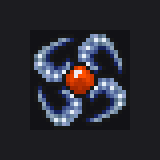

Help & discovery
P@help [page|word]paged detail list (12/page —
@help2 or @help 2 for the next page); a word filters, e.g. @help item. Dispatched before the command table, so it works at every tier.P@commands / @cmdscompact index of every command you can use (names only; @help <word> for details)
World & navigation
T@go <x> <y>jump to a tile on the map you're already on (bad/out-of-range coords -> 0 0)
T@rez [username]revive a player (or yourself) to full HP/MP (a full heal if already alive)
T@approach <username>teleport to an online player
T@diekill yourself (ghost form + real death penalties; @rez to get back up)
T@clip [0|1]no-clip: walk through walls, mobs and players (this session only; warps still work) — needs the client companion: setup guide
T@anywarp [0|1]use any warp despite level/mark/path/quest requirements (this session only; echoes the denial it waived)
T@showwarps [0|1] | look [warpFrame] [doorFrame]mark every warp + scripted doorway on the map (you only; follows across maps; lists destinations). Both kinds default to frame 877, the blue pinwheel

;look re-tunes live and reports how many of each kind it re-stampedT@maps [filter]list/fuzzy-search maps
G@mobs [filter]list/fuzzy-search the mob registry
G@summon <mob name|id>spawn a registry mob in front of you
G@reloadhot-reload file-backed content
G@restart [minutes] [reason] | cancelschedule a server restart, warning everyone as it nears
G@rabbitone wandering, killable rabbit
G@killdespawn every mob on this map
Character
T@lvl <1-99>rebuild as level n: accurate stats + the matching spellbook
T@mark <0-3>subpath rank on top of 99 (Il san…Sam san): its stats + spells
T@class <Warrior|Rogue|Mage|Poet|Peasant>set the class/path and rebuild for it
T@dog [0|1]the Dog-quest flag: unlocks Dog spells for a base class or NPC subpath
T@sage [0-5]Share Wisdom rung: sets the spell AND clears the 90-day upgrade wait (bare @sage reports)
T@quest [key] [stage]read/set the raw quest registry (bare = dump your keys; stage 0 clears; non-numeric sets the string registry) — keys are catalogued in The Quest Registry
T@legend [key] [0 | <icon> <color> <text...>]list legend marks with their internal keys; remove one, or (re)create one by key — legend marks are catalogued in The Quest Registry
T@text [type] [message]send yourself one 0x0A line on a channel; bare @text sweeps them to compare panes/colours
T@align <Unaligned|Kwisin|Mingken|Ohaeng|0-3>set sub-alignment and rebuild the book
T@stats <vita> <mana> <all> | <vita> <mana> <might> <grace> <will>set vitals and stats directly (overrides the curve)
T@might <n>set base might
T@will <n>set base will
T@grace <n>set base grace
T@hp <n>set max HP (vita) and refill
T@mp <n>set max MP (mana) and refill
T@nation <id>set your nation crest (persists)
T@totem <id>set your totem crest (persists)
T@karma <value|tier>set karma outright: a number, or a tier (cat, dog, angel, …)
T@dispelstrip every buff and debuff on you
T@killtrack [clear]the 8-slot kill track the mythic alliances count (clear = what accepting one does)
T@coins / @gold [n]add coins to the purse
T@ride / @mount [0|1]get on/off the horse
Items
T@items [filter]list/fuzzy-search the item registry
T@item <name|id> [amount]summon an item into the bag
T@clearinvempty the bag and gear
G@icons [start]fill the bag with client Item.epf frames
Spells
T@spell <name|id>learn one ability outright, any class or level (a rebuild forgets it)
Moderation
No duration means permanent; anything applied to an online player takes effect immediately, not at their next login.
G@ban <name> [minutes] [reason]ban an account (no duration = permanent); kicks them if online
G@unban <name>lift an account ban
G@mute <name> [minutes] [reason]silence speech/whisper/subpath chat; '@' commands still work
G@unmute <name>lift a mute
G@kick <name> [reason]disconnect an online player (saves them first)
G@banip <ip> [minutes] [reason] | remove <ip>ban a source address
G@banslist everyone currently banned or muted
G@modlog [n]recent moderation actions, newest first
Events
G@carnage <name> [n] | <name> = <n>record carnage victories (n<0 removes)
Config read-outs
Read-only: the toggles themselves are game-data CSV edits followed by @reload.
G@npcwhich NPCs are switched off (config + @reload to change)
G@craftcrafting era-gate status (config + @reload to change)
G@eratarget date + which dated content it includes
Sprite & appearance lab
G@look b0..b6spawn a dummy with those appearance bytes
G@row <i> <lo> <hi>sweep appearance byte i
G@cre [look] [hp] [color]spawn one real monster (0x07)
G@crow <lo> <hi> [step]sweep monster look ids across a row
G@crecol <look> [lo] [hi] [step]sweep the 0x07 colour byte
G@mob <look> [hp] [color]spawn one SHARED world monster everyone sees
G@mobraw <hi> <lo> [hp]raw-sprite 0x16 probe (self-only)
G@mobrow <lo> <hi> [step]sweep graphic ids (0x16, self-only)
G@spawn [look] [hp]a small pack around you
G@dye <n>war-paint dye: set appearance[4]
Media
P@music [name|id] [vol] [mp3|midi] | old|new | stopplay a music track, or pick the soundtrack (no argument lists them)
G@snd <id>play a raw client sound id
G@swingsnd <id>set + audition the melee swing sfx
G@fistsnd <id>set + audition the unarmed swing sfx
G@hitsnd <id>set + audition the on-connect impact sfx
G@mobact <type> [time]set + preview the mob attack-pose action (0x1A) on the faced mob
G@efx <id>play a raw Effect.tbl animation over self — ids are listed per spell on the Spells sheet (FX column)
G@mtx <type>audition a raw SendMiniText channel
G@weather clear|rain|snow | raw <n>force this map's weather
G@setting [name] [on|off]read/set any 0x1b Options toggle
G@doze [secs|off]put YOURSELF to sleep (Doze can't be self-targeted on the wire)
Protocol probes
Reverse-engineering tools: they poke raw packets at your own client to map the wire format. Expect weirdness on screen; that's the point.
G@hit [dmg]0x13 over-head HP bar on the faced mob
G@hpprobe <cur> <max>diag: pin the maxHP/maxMP offsets (@hp is the setter)
G@s <hexop> [hexflags]fire a sentinel status packet
G@stgself-describing gradient stats packet
G@r6 [hexop]replay a captured 6.x stats packet
G@batchsentinel probe over a curated opcode set
G@sweepdisabled (crashes the client)
G@mailflag <off> [valHex]sweep the 0x08 mail/parcel notify byte
G@nat <id>sweep nation id -> HUD name
G@users [sort|sweep]0x36 user list (sweep = label every cell)
G@askpic0x49 - make the client re-upload users/<name>.epf
G@totemsweep <id>diag: sweep totem id -> HUD name (@totem is the setter)
G@selfnative 0x39 self-profile
G@legexact 6.x 0x39 replay
G@ckm0x34 with marker strings
G@click [name]native 0x34 click-profile
G@boardobjboard-sign calibration for the faced tile
G@wmpos <i> <x> <y>live-tune a world-map destination dot
G@wmtest [bg]native world-map screen with a given background
G@pkt <hexop> [tokens] | add | send | show | clear | file <name>send a raw server->client packet
G@delreason [lo] [hi]sweep the 0x10 reason byte for a silent one
G@look533 [i v | clear]5.33: override one of the 11 appearance bytes and redraw